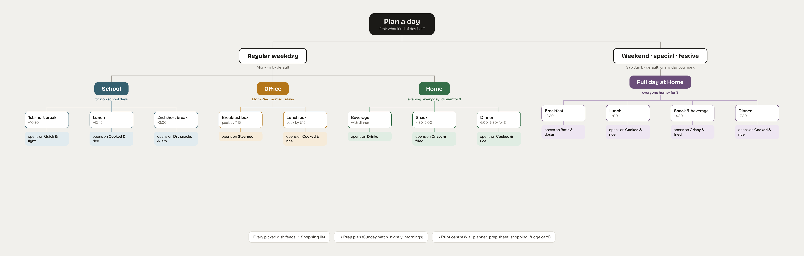
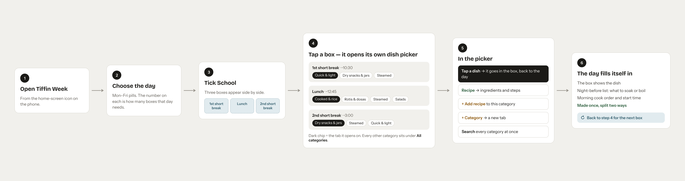

The wireframe bundle, split one file per screen and ordered for building. Every screen is standalone HTML with its real content filled in — no template loops, no runtime. Click any plate to open that screen on its own.
Not screens to build. One is the data model, the other is the navigation spec — between them they explain why the rest of the app is shaped the way it is.


Build your schema from this before writing any screen.
Week (7 days)
└── Day
├── dayType: weekday | weekend | special | festive
└── places[]
├── School (ticked per day) → 1st short break ~10:30 · Lunch ~12:45 · 2nd short break ~3:00
├── Office (ticked per day) → Breakfast box · Lunch box (both pack by 7:15)
├── Home (always on) → Beverage · Snack 4:30–5:00 · Dinner 6:00–6:30
└── Full day (weekend/special) → Breakfast ~8:30 · Lunch ~1:00 · Snack & beverage ~4:30 · Dinner ~7:30
Slot → opensOnCategory, pick → Dish
Dish → name, note, cookMinutes, category, base?, ingredients[]{ name, qty, est, shopSection }
picks → Shopping list → Prep plan → Print centre
The frame every other screen sits in: header, week navigation, day pills, and the decision that classifies a day.
Build this end to end before anything else. Office, Home and Full day are the same machine pointed at different slots. Screen 07 adds the expanded recipe state; screen 08 is where the app earns its keep.
Same picker, two slots. Note the dashed FRI 2? pill — office days that vary week to week, confirmed by a Thursday-night nudge set in Settings.
Home needs no tick; it runs every day. Screen 16 introduces the serves stepper, 17 the computed evening timeline.
Weekend, special and festive days. 18 is the half-planned state worth building carefully; 19 is the picker variant for swapping a dish already in a slot.
Nothing here is hand-entered — it all falls out of the picks. Good place for tests: quantities, pantry exclusions, lead times.
The recipe editor feeds everything upstream: amounts rescale with serves, and linking a base is what puts a task on the prep plan.
Fixed paper sizes, exported as a PDF and shared or printed. Build these with real page dimensions and a print stylesheet.